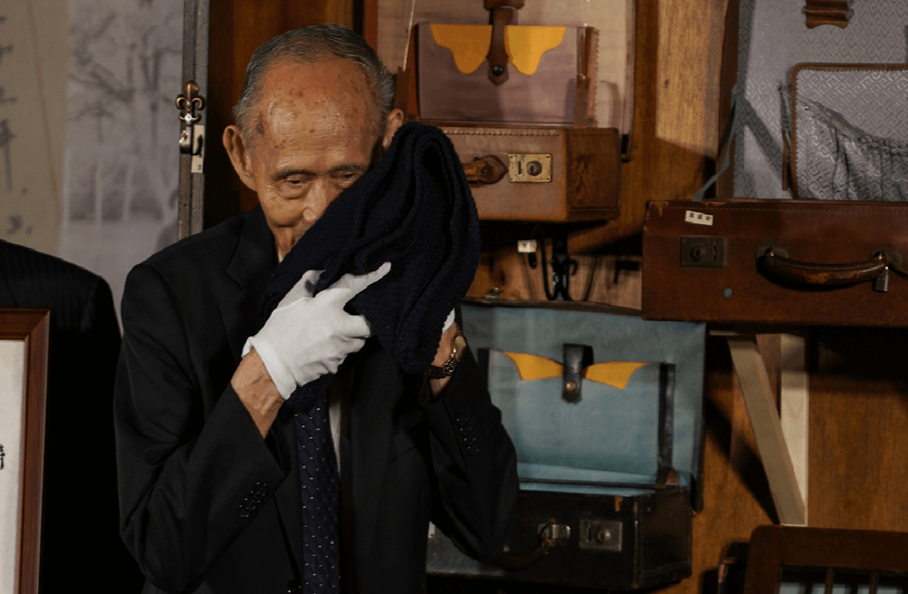
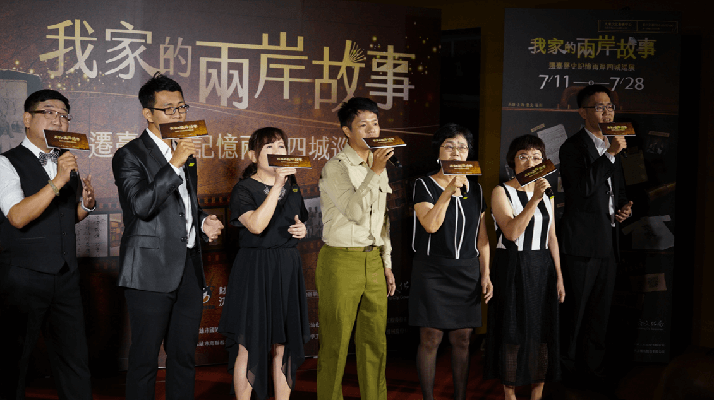

遷臺歷史記憶兩岸四城巡展高雄開幕
2019-12-11
遷臺歷史記憶滿載祖輩珍貴的傳家篇章航向高雄！由沈春池文教基金會主辦、高雄市政府文化局合辦的「我家的兩岸故事~遷臺歷史記憶兩岸四城巡展」11日上午於大東文化藝術中心盛大開展。巡迴展首站選在遷臺長者曾經漂洋過海安身立命的港灣–高雄，當年在滾滾時代洪流中東渡來臺的他們，齊在高雄碼頭靠岸，從此展開人生的下半場。市長韓國瑜於致詞時提到，高雄也曾是他人生的歷史渡口，18歲時他帶著母親給的五百元到鳳山陸軍官校當兵，眨眼40年過去，眷村文化和兩岸故事已孕育出獨特醇厚的寶島風貌。

人聲樂團「寶齡爵仕」以跨族群組曲，透過魯凱族語、客語、閩南語與華語等不同語調的唱和，為展覽拉開序幕。
開幕式以跨族群人聲樂團「寶齡爵仕」的組曲拉開序幕，透過魯凱族語、客語、閩南語與華語等不同語調的唱和，彰顯臺灣海納不同省籍及語系的多元性格。推動「遷台歷史記憶庫」的沈春池文教基金會董事長沈慶京提到，1949大江大海的年代，百萬軍民播遷臺灣比鄰而居，後來歷經漫長的磨合，逐漸溝通無礙、融為一體。當時的臺灣艱困貧陋，他親眼目睹易女而養的殘忍事實。沈董事長深為惋惜，未能提早數年啟動計畫，搶救更多歷史記憶，希望透過兩岸四城巡迴展覽進行文教推廣，以影音收集遷臺長者及早期遷徙來臺的閩南人、客家人後代，透過人物訪談資料庫的建構，物件的蒐羅典藏，以虛實整合方式呈現大時代的悲歡離合與生活情趣。

其他新聞
-

-
 遷臺歷史記憶兩岸四城巡展高雄開幕2019-10-23兩岸的故事在我家！由沈春池文教基金會與上海市海峽兩岸交流促進會合辦的「我家的兩岸故事~遷台歷史記憶兩岸四城巡展」，溯源大時代縱深、守護遷台歷史，用實物、圖文、聲像珍藏一個個我家的兩岸故事，10月9日下午2點滿載動人的傳家篇章駛向上海，于閔行區
遷臺歷史記憶兩岸四城巡展高雄開幕2019-10-23兩岸的故事在我家！由沈春池文教基金會與上海市海峽兩岸交流促進會合辦的「我家的兩岸故事~遷台歷史記憶兩岸四城巡展」，溯源大時代縱深、守護遷台歷史，用實物、圖文、聲像珍藏一個個我家的兩岸故事，10月9日下午2點滿載動人的傳家篇章駛向上海，于閔行區 -
 遷臺歷史記憶兩岸四城巡展高雄開幕2019-12-11遷臺歷史記憶滿載祖輩珍貴的傳家篇章航向高雄！由沈春池文教基金會主辦、高雄市政府文化局合辦的「我家的兩岸故事~遷臺歷史記憶兩岸四城巡展」11日上午於大東文化藝術中心盛大開展。巡迴展首站選在遷臺長者曾經漂洋過海安身立命的港灣–高雄，當年在滾滾時
遷臺歷史記憶兩岸四城巡展高雄開幕2019-12-11遷臺歷史記憶滿載祖輩珍貴的傳家篇章航向高雄！由沈春池文教基金會主辦、高雄市政府文化局合辦的「我家的兩岸故事~遷臺歷史記憶兩岸四城巡展」11日上午於大東文化藝術中心盛大開展。巡迴展首站選在遷臺長者曾經漂洋過海安身立命的港灣–高雄，當年在滾滾時
活動消息
-
-
遷臺歷史記憶兩岸四城巡展高雄開幕2019-10-23兩岸的故事在我家！由沈春池文教基金會與上海市海峽兩岸交流促進會合辦的「我家的兩岸故事~遷台歷史記憶兩岸四城巡展」，溯源大時代縱深、守護遷台歷史，用實物、圖文、聲像珍藏一個個我家的兩岸故事，10月9日下午2點滿載動人的傳家篇章駛向上海，于閔行區
-
遷臺歷史記憶兩岸四城巡展高雄開幕2019-12-11遷臺歷史記憶滿載祖輩珍貴的傳家篇章航向高雄！由沈春池文教基金會主辦、高雄市政府文化局合辦的「我家的兩岸故事~遷臺歷史記憶兩岸四城巡展」11日上午於大東文化藝術中心盛大開展。巡迴展首站選在遷臺長者曾經漂洋過海安身立命的港灣–高雄，當年在滾滾時